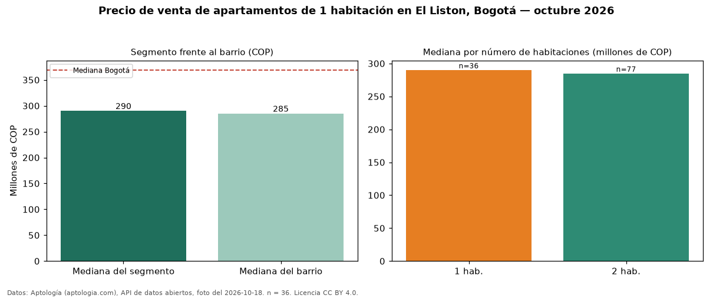

Precio de venta de apartamentos de 1 habitación en El Liston, Bogotá — octubre 2026
Con 36 avisos vigentes, el precio mediano de apartamentos de 1 habitación en venta en El Liston (localidad de Los Mártires), Bogotá es COP 290 millones. Eso la ubica 21 % por debajo de la mediana de Bogotá para apartamentos de 1 habitación (COP 369 millones). Son 31 % de los 115 avisos de apartamentos en venta del barrio, cuya mediana general es COP 285 millones (+2 %). Con la mediana de arriendo del mismo barrio y tamaño (COP 1.600.000 al mes), el arriendo anual equivale a 6,6 % del precio de venta: una aproximación gruesa a la rentabilidad bruta, porque compara medianas de ofertas distintas. En el mismo barrio, la mediana es COP 285 millones con 2 habitaciones (n = 77). Datos: Aptología (aptologia.com), API de datos abiertos, licencia CC BY 4.0 — https://www.aptologia.com/venta/bogota/el-liston. Archivos: PDF de 2 páginas, CSV con las cifras y gráfica PNG.

| Avisos únicos | 36 |
|---|---|
| Percentil 25 | — |
| Mediana | COP 290.000.000 |
| Percentil 75 | — |
Fuente: avisos vigentes de portales inmobiliarios recopilados por Aptología, deduplicados (mínimo 30 avisos únicos por celda). Precios pedidos, no cerrados. Fecha: 2026-10-18.